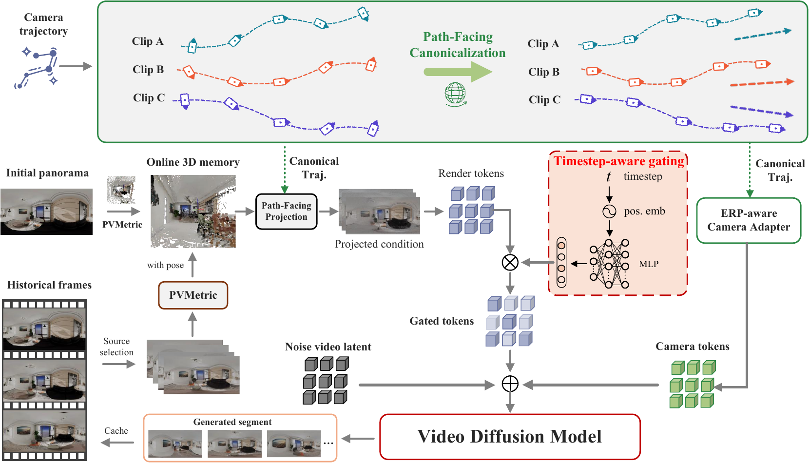

PVWander: 3D Memory-guided Panoramic Video Wandering with Path-Facing Canonicalization
1 Peking University2 Pengcheng Laboratory3 Frontop
* Corresponding author


Qualitative comparisons
Long-horizon generation over 16 segments
Method
Given an initial ERP panorama and user-specified long camera trajectories, PVWander generates panoramic video segment by segment with an online 3D point-cloud memory. The memory is reprojected to target viewpoints to guide each segment, and newly generated observations are lifted into 3D to update the memory for subsequent generation.
Each segment is conditioned on its first frame, the target camera trajectory, and the reprojected memory renders. The first-frame condition is the input panorama for the initial segment and the final frame of the preceding segment thereafter.


Path-Facing Canonicalization
Path-Facing canonicalization reduces motion–orientation variation by aligning each segment's ERP orientation with its principal translation direction. It exploits the horizontal cyclic symmetry of ERP panoramas, which allows yaw reorientation through circular shifts while preserving scene coverage.
Timestep-aware gating modulation
Reprojected memory may contain unreliable local details caused by generation artifacts and depth inaccuracies, while still retaining useful coarse spatial structure. We therefore introduce Timestep-aware gating modulation, which learns channel-wise gates conditioned on the denoising timestep, allowing memory features to be attenuated or amplified without a hard cutoff.